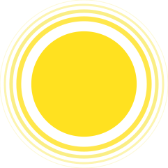
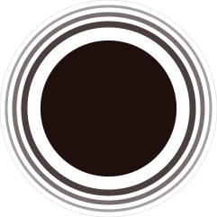

El diseño de este porfolio supondrá explorar nuevos caminos en el diseño.
Hasta el momento he tenido un estilo bastante racionalista más cercano al diseño nórdico, debido a que eso fue lo que me enseñaron en el Grado en Universitario, en Tenerife. Por lo cual me gustaría explorar otros caminos, aunque tampoco espero romper totalmente con el racionalismo, dado que lo tengo muy arraigado.
En lo que a mi personalidad respecta soy una persona bastante tranquila, paciente, un poco clasicorro y empático.
Por otro lado, aunque sea contradictorio, me encanta el rock y heavy, ilustradores como Derek Hess o Alex Pardee.

Amarillo
C0 M90 Y10 K0
R255 G225 B32
#FFE120

Negro
C0 M5 Y0 K100
R30 G16 B13
#1E100D
Los colores principales del portfolio son en amarillo y el negro.
El amarillo será utilizado principalmente para los estados activos de los objetos, fondos en combinación con formas negras y los elementos de más relevancia en el sitio (siempre y cuando no haya conflicto con el color blanco)
El negro será utilizado para los estados inactivos de los elementos, textos, en combinación con el amarillo y para el logosímbilo.
La familia tipográfica Overlock ha sido escogida debido a su carácter desenfadado y a que armoniza con la anatomía del logosímbolo.
Será utilizado principalmente para titulares. Los estilos y pesos escogidos son: 400, 700, 900, 400 italic.
Por otro lado, la Open Sans se utiliza para el resto de textos. Los pesos y estilos escogidos son: 400, 400 italic, 600, 700, 700 italic.
Título H1
Título H2
Título H3
Título H4
Título h5
Título H6
Texto destacado
Texto enfatizado
Texto pequeño
Texto resaltado
Texto tachado
Texto subrayado
- Lista desordenada
- Lista desordenada
- Lista desordenada
- Lista desordenada
- Lista ordenada
- Lista ordenada
- Lista ordenada
- Lista ordenada
"Vive el momento, no pienses; siente, utiliza tu instinto, siente La Fuerza.
- 1. La Fuerza
- Campo de energía metafísico y omnipresente .